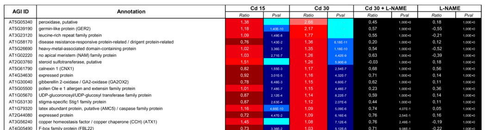

FBL22 (At4g05490) is a predicted Arabidopsis F-box/LRR protein with an N-terminal F-box domain and five leucine-rich repeats. Its domain architecture and phylogenetic annotation support binding to the SCF ubiquitin ligase complex and a putative role in substrate recognition. The specific substrates, SCF partners and cellular location have not been established in the sources examined. FBL22 transcript abundance was reported to increase through a nitric-oxide-dependent pathway in cadmium-treated roots, but this expression result does not establish a protein-level role in cadmium tolerance or an independently measured ubiquitin ligase activity.
| GO Term | Evidence | Action | Reason |
|---|---|---|---|
|
GO:1905761
SCF ubiquitin ligase complex binding
|
IBA
GO_REF:0000033 |
ACCEPT |
Summary: The IBA assigns SCF ubiquitin ligase complex binding to FBL22. The UniProt record independently identifies an F-box domain at residues 24-71 and five LRRs, consistent with a putative SCF substrate-recognition protein.
Reason: Retain the phylogenetically curated binding function: the observed domain architecture is compatible with the IBA and there is no target-specific evidence of functional loss. This is an inference, not a direct FBL22-SKP1 interaction assay. The title of PMID:11077244 alone cannot establish the interaction and is no longer used as a mechanistic quotation. The precise substrates and complex partners remain unresolved.
Supporting Evidence:
file:ARATH/FBL22/FBL22-uniprot.txt
FT DOMAIN 24..71
FT /note="F-box"
|
|
GO:0005634
nucleus
|
ISM
GO_REF:0000122 |
UNDECIDED |
Summary: Nuclear localization is an AtSubP computational prediction. Neither the protein domain architecture nor the available FBL22 transcript study establishes a nuclear location.
Reason: The ISM source is a localization prediction rather than experimental localization evidence. The retrieved sources do not resolve whether FBL22 acts in the nucleus, cytoplasm or both. Retain uncertainty rather than treating the general cellular distribution of SCF complexes as evidence for this protein.
|
|
GO:0006511
ubiquitin-dependent protein catabolic process
|
TAS
PMID:11019805 Protein degradation in signaling. |
UNDECIDED |
Summary: The accessible abstract of Callis and Vierstra links ubiquitin/proteasome-dependent proteolysis to plant signaling. It does not provide a gene-specific account of FBL22, and the full text was not accessible for adjudicating the original TAS annotation.
Reason: SCF-associated proteolysis is biologically plausible for an F-box/LRR protein, but the available source does not resolve the basis of this specific TAS annotation. The previous REMOVE asserted an absence of FBL22 from the paper without access to its full text. Incomplete source access is not evidence that the process is false; leave the source-specific annotation unresolved.
Supporting Evidence:
PMID:11019805
Recent studies have linked proteolysis by the ubiquitin/proteasome pathway to a variety of signaling pathways in higher plants.
|
|
GO:0006511
ubiquitin-dependent protein catabolic process
|
TAS
PMID:11077244 F-box proteins in Arabidopsis. |
UNDECIDED |
Summary: UniProt cites Xiao and Jang for FBL22 gene-family classification and nomenclature. The local PMID record and PubMed contain bibliographic information but no abstract or full text.
Reason: The F-box/LRR architecture is compatible with a role in ubiquitin-dependent protein turnover, but the basis of the original TAS process annotation cannot be adjudicated from a title or a family assignment alone. Attempts to retrieve the publisher full text were unsuccessful. The prior REMOVE exceeded the available evidence; no contradictory FBL22 experiment was identified.
|
Q: Which ASK/SKP1 partners and substrates interact with FBL22, and does it assemble into an active SCF complex?
Q: Does the NO-dependent increase in FBL22 transcript under cadmium treatment contribute to a measurable stress phenotype?
Q: Where does FBL22 localize under basal and cadmium/NO-treatment conditions?
Q: Do other Arabidopsis F-box/LRR proteins compensate for loss of FBL22?
Experiment: Co-immunoprecipitation of FBL22 with Arabidopsis SKP1/ASK proteins and CUL1 to confirm SCF complex assembly
Hypothesis: FBL22 associates with an SCF core through its F-box domain.
Experiment: FBL22-GFP fusion under native promoter to determine subcellular localization
Hypothesis: FBL22 has a reproducible cellular distribution that may change with stress.
Experiment: IP-MS interactomics or comparative ubiquitinomics in fbl22 loss-of-function lines to identify substrates
Hypothesis: Loss of FBL22 alters the abundance or ubiquitination of specific protein substrates.
Experiment: CRISPR knockout or T-DNA insertion alleles tested under cadmium stress and NO perturbation conditions
Hypothesis: FBL22 contributes to a cadmium/NO-dependent phenotype rather than merely responding transcriptionally.
Experiment: Yeast two-hybrid or split-ubiquitin screen using FBL22 LRR domain as bait to identify interacting substrates
Hypothesis: The LRR region contributes to selective substrate recognition.
The research report should be a detailed narrative explaining the function, biological processes, and localization of the gene product. Citations should be given for all claims.
You should prioritize authoritative reviews and primary scientific literature when conducting research. You can supplement
this with annotations you find in gene/protein databases, but these can be outdated or inaccurate.
We are specifically interested in the primary function of the gene - for enzymes, what reaction is catalyzed, and what is the substrate specificity? For transporters, what is the substrate? For structural proteins or adapters, what is the broader structural role? For signaling molecules, what is the role in the pathway.
We are interested in where in or outside the cell the gene product carries out its function.
We are also interested in the signaling or biochemical pathways in which the gene functions. We are less interested in broad pleiotropic effects, except where these elucidate the precise role.
Include evidence where possible. We are interested in both experimental evidence as well as inference from structure, evolution, or bioinformatic analysis. Precise studies should be prioritized over high-throughput, where available.
The gene symbol FBL22 is ambiguous across organisms. For this report, the verified target is Arabidopsis thaliana At4g05490, UniProt Q9M0U6, also recorded as FBL22/C6L9.170, encoding a putative F-box/LRR-repeat protein 22. The similarly named human gene FBXL22 (ENSG00000197361) is a different gene; its disease associations are irrelevant and were excluded. (OpenTargets Search: -FBL22, bessonbard2009nitricoxidecontributes pages 5-7)
For this specific Arabidopsis protein, the literature is extremely limited. Its most defensible primary-function annotation is candidate substrate-recognition/adaptor subunit of an SCF-type E3 ubiquitin-ligase complex, inferred from its F-box and leucine-rich-repeat architecture—not a demonstrated standalone ubiquitin ligase. No substrate, degron, ligand, ubiquitin-chain specificity, SCF interaction, loss-of-function phenotype, or cellular localization has been established experimentally. The only clear locus-specific experimental evidence retrieved is a 2009 transcriptomic observation that root FBL22 RNA increases modestly during cadmium treatment in an apparently nitric-oxide-dependent expression class. (bessonbard2009nitricoxidecontributes pages 5-7, collins2024dynamicinteractionsbetween pages 7-8, saxena2023roleoffbox pages 1-3)
| Topic/claim | Observation | Evidence type | Confidence/limitations |
|---|---|---|---|
| Target identity | Target is Arabidopsis thaliana FBL22, locus At4g05490, UniProt Q9M0U6; literature also identifies At4g05490 as FBL22. Human FBXL22 (ENSG00000197361) is a distinct homonym and is excluded. (OpenTargets Search: -FBL22, bessonbard2009nitricoxidecontributes pages 5-7) | Locus-specific publication plus cross-species identifier check | High for identity; human disease records must not be transferred to the plant protein. |
| Domain architecture | User-supplied UniProt annotation assigns F-box/F-box-like and leucine-rich-repeat (LRR) features, consistent with the description “putative F-box/LRR-repeat protein 22.” | Curated/computational protein-domain annotation | Moderate; domain presence supports classification but does not demonstrate complex assembly or biological function. |
| Primary molecular-role hypothesis | F-box proteins generally serve as interchangeable substrate receptors in multimeric SCF complexes: the F-box associates with SKP1/ASK, whereas auxiliary regions such as LRRs may recruit substrates. FBL22 is therefore better described as a candidate SCF substrate receptor, not a demonstrated standalone E3 enzyme. (collins2024dynamicinteractionsbetween pages 7-8, saxena2023roleoffbox pages 1-3, pu2024abacterialplatform pages 1-2) | Mechanistic inference from domain architecture and established SCF biology | Moderate-to-low for FBL22 specifically; no retrieved FBL22-specific SKP1 binding, SCF assembly, or ubiquitination assay. |
| Substrate and reaction specificity | No protein substrate, degron, ligand, ubiquitin-chain type, or substrate-degradation reaction has been established for FBL22. | Absence of locus-specific biochemical evidence in retrieved literature | Unknown; an F-box/LRR annotation alone cannot identify a substrate or pathway. (saxena2023roleoffbox pages 1-3, saxena2023roleoffbox pages 3-5) |
| Cellular localization | No FBL22-specific localization experiment or reliable compartment assignment was found. | Evidence gap | Unknown; SCF-family membership does not by itself justify nuclear, cytosolic, membrane, or organellar localization. (collins2024dynamicinteractionsbetween pages 7-8, pu2024abacterialplatform pages 1-2) |
| Cadmium/NO-responsive expression | In a 2009 root microarray, FBL22 log2 ratios versus untreated plants were 0.73 (15 µM Cd²⁺), 1.03 (30 µM Cd²⁺), 0.71 (30 µM Cd²⁺ + L-NAME), and −0.22 (L-NAME alone). The study grouped it among NO-regulated, proteolysis-related genes. (bessonbard2009nitricoxidecontributes pages 5-7, bessonbard2009nitricoxidecontributes media ca0e7199) | Locus-specific CATMA microarray under 24-hour cadmium/NO-inhibition conditions | Moderate for transcript association; approximate fold changes are 1.66×, 2.04×, 1.64×, and 0.86×, respectively. This does not establish protein activity or pathway causality. |
| Validation and phenotype in the 2009 study | FBL22 was not among the seven genes selected for locus-specific qRT-PCR validation, and no FBL22 mutant, complementation, protein, ubiquitination, or phenotype experiment was reported. (bessonbard2009nitricoxidecontributes pages 5-7) | Study-design assessment | High; the paper supports stress-associated transcript regulation, not a demonstrated FBL22 function in cadmium toxicity or NO signaling. |
| Ubiquitin-ligase wording | The 2009 article described FBL22 as “displaying a ubiquitin protein ligase activity,” but its figure annotation was based on automatic Arabidopsis annotation and the study did not assay that activity. (bessonbard2009nitricoxidecontributes pages 5-7) | Secondary annotation within a transcriptomic study | Low for direct enzymatic proof; interpret as an annotation-derived prediction rather than experimental biochemical evidence. |
| Nearby suberization GWAS signal | A later GWAS found two significant chromosome-4 SNPs between At4g05475 and At4g05490; both neighboring genes were annotated as putative F-box proteins. The interval was deprioritized because of SNP-to-gene distance, and At4g05490 was not experimentally tested. (han2026gwasrevealsuber pages 6-8) | Statistical association near, but not within or causally assigned to, FBL22 | Very low for FBL22 causality; proximity does not establish that FBL22 controls endodermal suberization. The article is dated May 2026, outside the requested 2023–2024 priority window. |
| 2023–2024 evidence status | Retrieval found recent reviews clarifying SCF/F-box mechanisms, but no 2023–2024 primary functional study specifically establishing FBL22 substrates, localization, pathway, or phenotype. (collins2024dynamicinteractionsbetween pages 7-8, saxena2023roleoffbox pages 1-3, pu2024abacterialplatform pages 1-2) | Literature-search result and recent mechanistic reviews | High confidence that direct evidence retrieved is sparse, but not proof that no unindexed study exists. |
Table: Evidence-grade summary distinguishing locus-specific observations from domain-based inference for Arabidopsis FBL22. It highlights the limited direct functional evidence and major unresolved questions.
The supplied UniProt record identifies Q9M0U6 as FBL22 at At4g05490 in A. thaliana, with F-box/F-box-like and LRR-related annotations: IPR001810, IPR036047, IPR032675, IPR055411, and PF12937. This architecture agrees with the locus-specific literature, which calls At4g05490 “FBL22” or a putative F-box protein. (han2026gwasrevealsuber pages 6-8, bessonbard2009nitricoxidecontributes pages 5-7)
The database description should nevertheless be read as a sequence-based functional prediction. An F-box motif is consistent with binding an Arabidopsis SKP1-like/ASK adaptor, whereas an LRR region is consistent with protein–protein or substrate recognition. Neither feature proves that FBL22 forms an active SCF complex or identifies its substrate. (collins2024dynamicinteractionsbetween pages 7-8, saxena2023roleoffbox pages 1-3)
The human homonym provides an important false-positive trap: OpenTargets interpreted “FBL22” as human FBXL22, returning human disease associations. Those records do not concern At4g05490 and cannot be transferred to the plant protein. (OpenTargets Search: -FBL22)
Canonical SCF ubiquitin ligases contain CUL1 as a scaffold, RBX1 as the RING/E2-binding component, SKP1/ASK as an adaptor, and a variable F-box protein as the substrate-recruitment component. The F-box associates with SKP1, while additional domains determine target recognition; ubiquitinated substrates may subsequently be degraded by the 26S proteasome. Recent reviews therefore describe F-box proteins principally as substrate receptors within multisubunit E3 enzymes, rather than necessarily autonomous catalytic enzymes. (collins2024dynamicinteractionsbetween pages 7-8, saxena2023roleoffbox pages 1-3, saxena2023roleoffbox pages 3-5, pu2024abacterialplatform pages 1-2)
Applied cautiously to FBL22, the predicted structural role is:
All three steps remain hypotheses for FBL22. No retrieved study demonstrated ASK/SKP1 binding, CUL1/RBX1 complex assembly, direct substrate binding, ubiquitin transfer, or substrate degradation. (collins2024dynamicinteractionsbetween pages 7-8, saxena2023roleoffbox pages 1-3, pu2024abacterialplatform pages 1-2)
FBL22 is not currently supported as an enzyme with an independently catalyzed small-molecule reaction. Even if it is an authentic SCF component, the ubiquitin-transfer chemistry would be performed by the assembled E1–E2–SCF cascade; FBL22 would chiefly confer target selection. Its protein substrate, recognition motif, required post-translational modification, ligand dependence, ubiquitin linkage, and degradation outcome are all unknown. (saxena2023roleoffbox pages 1-3, saxena2023roleoffbox pages 3-5, pu2024abacterialplatform pages 1-2)
A 2009 paper described FBL22 as “displaying a ubiquitin protein ligase activity,” but the same paper states that its figure annotations came from automatic Arabidopsis annotation and reports no FBL22 biochemical assay. That wording should therefore not be treated as direct evidence of enzymatic activity. (bessonbard2009nitricoxidecontributes pages 5-7)
Besson-Bard et al. studied Arabidopsis roots exposed for 24 hours to cadmium and/or the nitric-oxide-synthesis inhibitor L-NAME. FBL22 was assigned to a class of 39 NO-regulated genes—27 induced and 12 repressed—and grouped with three proteolysis-related loci. The authors interpreted this group as suggesting a role for proteolysis in nitric-oxide action during cadmium stress. (bessonbard2009nitricoxidecontributes pages 5-7)
The reported FBL22 CATMA microarray log2 expression ratios relative to untreated roots were:
Thus, the strongest observed response was about a twofold transcript increase at 30 µM cadmium. Cotreatment with L-NAME reduced that increase, supporting an association between nitric-oxide status and FBL22 transcription under these conditions. However, FBL22 was not among the seven loci selected for gene-specific qRT-PCR validation. No FBL22 mutant, complementation test, protein-abundance measurement, ubiquitination assay, or cadmium phenotype was reported. The study therefore supports stress-responsive expression, not a causal role for FBL22 in nitric-oxide signaling, metal uptake, root inhibition, or proteolysis. (bessonbard2009nitricoxidecontributes pages 5-7)
The primary source is Besson-Bard et al., Plant Physiology 149:1302–1315, published January 2009, DOI: 10.1104/pp.108.133348. (bessonbard2009nitricoxidecontributes pages 5-7)
A later Arabidopsis GWAS detected two chromosome-4 SNPs between At4g05475 and At4g05490 in an analysis of the fully suberized root-endodermal zone. Both neighboring genes were annotated as putative F-box proteins. The SNPs were 1,839 and 1,236 bp from the neighboring genes, although the available excerpt does not unambiguously map each distance to one gene. The investigators deprioritized this interval and did not test At4g05490. Consequently, this is only a nearby statistical signal, not evidence that FBL22 regulates suberization. (han2026gwasrevealsuber pages 6-8)
This report appeared after the requested priority period: Han et al., Nature Plants 12:1079–1094, May 2026, DOI: 10.1038/s41477-026-02292-x. The retrieved pages also derive from a December 2025 preprint version. (han2026gwasrevealsuber pages 6-8)
No FBL22-specific fluorescent-protein localization, biochemical fractionation, immunolocalization, organellar-proteomics validation, or compartment-restricted interaction experiment was found. Its operational cellular location must therefore be reported as unknown.
It would be inappropriate to assign FBL22 automatically to the nucleus, cytosol, membrane, or an organelle merely because other F-box proteins act there. SCF substrate selection depends partly on expression, localization, interaction affinity, and context, and family membership alone does not establish any one compartment. (collins2024dynamicinteractionsbetween pages 7-8, pu2024abacterialplatform pages 1-2)
No 2023–2024 primary study retrieved in this search directly characterized At4g05490/FBL22. The most relevant recent literature instead refines the general mechanistic interpretation of F-box proteins. Saxena et al. (published May 2023) emphasize their role as variable SCF substrate receptors and the need to establish target recognition experimentally; Collins et al. (February 2024) similarly describe ASK/SKP1–CUL1–RBX organization and context-dependent SCF assembly. (collins2024dynamicinteractionsbetween pages 7-8, saxena2023roleoffbox pages 1-3)
Relevant recent sources include:
There is currently no demonstrated agricultural, biotechnological, or other real-world implementation specific to FBL22. Proposals to manipulate it for cadmium tolerance, nutrient management, root suberization, or crop improvement would be premature without causal genetics and substrate identification.
Established with high confidence: the target identity is Arabidopsis At4g05490/FBL22/Q9M0U6, distinct from human FBXL22; its sequence is annotated as F-box/LRR-like; and its root transcript showed modest cadmium-associated regulation in one microarray study. (OpenTargets Search: -FBL22, bessonbard2009nitricoxidecontributes pages 5-7, bessonbard2009nitricoxidecontributes media ca0e7199)
Reasonable but unverified inference: FBL22 may act as a substrate-recognition adaptor in an SCF-type ubiquitin-ligase complex, with its LRR region contributing to protein recognition. (collins2024dynamicinteractionsbetween pages 7-8, saxena2023roleoffbox pages 1-3)
Not established: direct E3 activity, an interacting ASK/SKP1 protein, substrate identity, ubiquitin-chain or degron specificity, a signaling pathway, cadmium/NO causality, mutant phenotype, developmental role, suberization function, or subcellular localization.
The highest-priority experiments are endogenous-expression localization, ASK/SKP1 and CUL1 complex-assembly tests, loss-of-function and complementation phenotyping under cadmium/NO perturbation, affinity-purification proteomics for substrates, and substrate-dependent ubiquitination/degradation assays. Until such evidence exists, “putative F-box/LRR substrate receptor” is more accurate than “ubiquitin ligase with a defined biological function.”
References
(OpenTargets Search: -FBL22): Open Targets Query (-FBL22, 5 results). Buniello, A. et al. (2025). Open Targets Platform: facilitating therapeutic hypotheses building in drug discovery. Nucleic Acids Research.
(bessonbard2009nitricoxidecontributes pages 5-7): Angélique Besson-Bard, Antoine Gravot, Pierre Richaud, Pascaline Auroy, Céline Duc, Frédéric Gaymard, Ludivine Taconnat, Jean-Pierre Renou, Alain Pugin, and David Wendehenne. Nitric oxide contributes to cadmium toxicity in arabidopsis by promoting cadmium accumulation in roots and by up-regulating genes related to iron uptake. Plant Physiology, 149(3):1302-1315, Jan 2009. URL: https://doi.org/10.1104/pp.108.133348, doi:10.1104/pp.108.133348. This article has 468 citations and is from a highest quality peer-reviewed journal.
(collins2024dynamicinteractionsbetween pages 7-8): Emma Collins, Huixia Shou, Chuanzao Mao, James Whelan, and Ricarda Jost. Dynamic interactions between spx proteins, the ubiquitination machinery, and signalling molecules for stress adaptation at a whole-plant level. The Biochemical journal, 481 5:363-385, Feb 2024. URL: https://doi.org/10.1042/bcj20230163, doi:10.1042/bcj20230163. This article has 15 citations.
(saxena2023roleoffbox pages 1-3): Harshita Saxena, Harshita Negi, and Bhaskar Sharma. Role of f-box e3-ubiquitin ligases in plant development and stress responses. Plant Cell Reports, 42:1133-1146, May 2023. URL: https://doi.org/10.1007/s00299-023-03023-8, doi:10.1007/s00299-023-03023-8. This article has 66 citations and is from a peer-reviewed journal.
(pu2024abacterialplatform pages 1-2): Zuo-Xian Pu, Jun-Li Wang, Yu-Yang Li, Luo-Yu Liang, Yi-Ting Tan, Ze-Hui Wang, Bao-Lin Li, Guang-Qin Guo, Li Wang, and Lei Wu. A bacterial platform for studying ubiquitination cascades anchored by scf-type e3 ubiquitin ligases. Biomolecules, 14:1209, Sep 2024. URL: https://doi.org/10.3390/biom14101209, doi:10.3390/biom14101209. This article has 4 citations.
(saxena2023roleoffbox pages 3-5): Harshita Saxena, Harshita Negi, and Bhaskar Sharma. Role of f-box e3-ubiquitin ligases in plant development and stress responses. Plant Cell Reports, 42:1133-1146, May 2023. URL: https://doi.org/10.1007/s00299-023-03023-8, doi:10.1007/s00299-023-03023-8. This article has 66 citations and is from a peer-reviewed journal.
(bessonbard2009nitricoxidecontributes media ca0e7199): Angélique Besson-Bard, Antoine Gravot, Pierre Richaud, Pascaline Auroy, Céline Duc, Frédéric Gaymard, Ludivine Taconnat, Jean-Pierre Renou, Alain Pugin, and David Wendehenne. Nitric oxide contributes to cadmium toxicity in arabidopsis by promoting cadmium accumulation in roots and by up-regulating genes related to iron uptake. Plant Physiology, 149(3):1302-1315, Jan 2009. URL: https://doi.org/10.1104/pp.108.133348, doi:10.1104/pp.108.133348. This article has 468 citations and is from a highest quality peer-reviewed journal.
(han2026gwasrevealsuber pages 6-8): Jian-Pu Han, Linnka Lefebvre-Legendre, Jun Yu, Maria Beatriz Capitão, Chloé Beaulieu, Kay Gully, Vinay Shukla, Yibo Wu, Andreas Boland, Christiane Nawrath, and Marie Barberon. Gwas reveal suber gene1-mediated suberization via type one phosphatases. Nature Plants, 12(5):1079-1094, May 2026. URL: https://doi.org/10.1038/s41477-026-02292-x, doi:10.1038/s41477-026-02292-x. This article has 2 citations and is from a highest quality peer-reviewed journal.

Reviewed all four annotation rows, the UniProt record, both original PMID records,
the existing Falcon report, and the primary source underlying its expression claim.
FT DOMAIN 24..71PE 4: Predicted;/articles/2649387/ URL. The short excerptQuickGO definitions for GO:1905761, GO:0006511 and GO:0005634 were retrieved through
its ontology API on this date. Existing source IDs, terms and evidence codes were
preserved. No new GO IDs were assigned.
Publication caching completed for both original PMIDs; PMID:19168643 was fetched
through the repository CLI. A Falcon refresh with perplexity-lite fallback was
launched concurrently with caching; its outcome will be appended below. Low
compliance caused by unavailable quotations is intentionally left visible.
Independent annotation-reviewer consultation agreed with all four decisions and
the conservative core synthesis. Its evidence-presentation suggestion was applied:
the UniProt domain excerpt now includes the adjacent F-box identity, not only the
residue coordinates.
The fresh Falcon report completed successfully (474.56 seconds; no fallback was
needed). Its evidence assessment agrees with the retained domain-based hypothesis
and the limits of the 2009 expression result. The report also identifies a nearby
2026 suberization GWAS lead, explicitly without FBL22-specific causal validation;
that secondary lead was not promoted to a functional annotation. An exact excerpt
from the refreshed report now supports the qualified core synthesis. Final gene
and history validation passed; the review HTML was regenerated.
Moved the bare Falcon report reference on the GO:1905761 IBA review from supported_by to additional_reference_ids. The report remains a provenance pointer; no quotation was manufactured or required for the inference. The directly checked UniProt F-box domain quotation remains the support for compatible target architecture, with the PAINT assertion retained on its own phylogenetic basis. All four source annotations and their actions were preserved. No new research or cache refresh was needed.
id: Q9M0U6
gene_symbol: FBL22
product_type: PROTEIN
status: COMPLETE
taxon:
id: NCBITaxon:3702
label: Arabidopsis thaliana
description: FBL22 (At4g05490) is a predicted Arabidopsis F-box/LRR protein with an N-terminal F-box domain
and five leucine-rich repeats. Its domain architecture and phylogenetic annotation support binding to
the SCF ubiquitin ligase complex and a putative role in substrate recognition. The specific substrates,
SCF partners and cellular location have not been established in the sources examined. FBL22 transcript
abundance was reported to increase through a nitric-oxide-dependent pathway in cadmium-treated roots,
but this expression result does not establish a protein-level role in cadmium tolerance or an independently
measured ubiquitin ligase activity.
existing_annotations:
- term:
id: GO:1905761
label: SCF ubiquitin ligase complex binding
evidence_type: IBA
original_reference_id: GO_REF:0000033
review:
summary: The IBA assigns SCF ubiquitin ligase complex binding to FBL22. The UniProt record independently
identifies an F-box domain at residues 24-71 and five LRRs, consistent with a putative SCF substrate-recognition
protein.
action: ACCEPT
reason: 'Retain the phylogenetically curated binding function: the observed domain architecture
is compatible with the IBA and there is no target-specific evidence of functional loss. This
is an inference, not a direct FBL22-SKP1 interaction assay. The title of PMID:11077244 alone
cannot establish the interaction and is no longer used as a mechanistic quotation. The precise
substrates and complex partners remain unresolved.'
supported_by:
- reference_id: file:ARATH/FBL22/FBL22-uniprot.txt
supporting_text: 'FT DOMAIN 24..71
FT /note="F-box"'
reference_section_type: DATABASE_ENTRY
additional_reference_ids:
- file:ARATH/FBL22/FBL22-deep-research-falcon.md
- term:
id: GO:0005634
label: nucleus
evidence_type: ISM
original_reference_id: GO_REF:0000122
review:
summary: Nuclear localization is an AtSubP computational prediction. Neither the protein domain architecture
nor the available FBL22 transcript study establishes a nuclear location.
action: UNDECIDED
reason: The ISM source is a localization prediction rather than experimental localization evidence.
The retrieved sources do not resolve whether FBL22 acts in the nucleus, cytoplasm or both. Retain
uncertainty rather than treating the general cellular distribution of SCF complexes as evidence
for this protein.
additional_reference_ids:
- file:ARATH/FBL22/FBL22-uniprot.txt
- PMID:19168643
- term:
id: GO:0006511
label: ubiquitin-dependent protein catabolic process
evidence_type: TAS
original_reference_id: PMID:11019805
review:
summary: The accessible abstract of Callis and Vierstra links ubiquitin/proteasome-dependent proteolysis
to plant signaling. It does not provide a gene-specific account of FBL22, and the full text was
not accessible for adjudicating the original TAS annotation.
action: UNDECIDED
reason: SCF-associated proteolysis is biologically plausible for an F-box/LRR protein, but the available
source does not resolve the basis of this specific TAS annotation. The previous REMOVE asserted
an absence of FBL22 from the paper without access to its full text. Incomplete source access is
not evidence that the process is false; leave the source-specific annotation unresolved.
supported_by:
- reference_id: PMID:11019805
supporting_text: Recent studies have linked proteolysis by the ubiquitin/proteasome pathway to a
variety of signaling pathways in higher plants.
reference_section_type: ABSTRACT
full_text_unavailable: true
- term:
id: GO:0006511
label: ubiquitin-dependent protein catabolic process
evidence_type: TAS
original_reference_id: PMID:11077244
review:
summary: UniProt cites Xiao and Jang for FBL22 gene-family classification and nomenclature. The local
PMID record and PubMed contain bibliographic information but no abstract or full text.
action: UNDECIDED
reason: The F-box/LRR architecture is compatible with a role in ubiquitin-dependent protein turnover,
but the basis of the original TAS process annotation cannot be adjudicated from a title or a family
assignment alone. Attempts to retrieve the publisher full text were unsuccessful. The prior REMOVE
exceeded the available evidence; no contradictory FBL22 experiment was identified.
additional_reference_ids:
- file:ARATH/FBL22/FBL22-uniprot.txt
references:
- id: GO_REF:0000033
title: Annotation inferences using phylogenetic trees
findings:
- statement: Source method for the existing phylogenetically inferred SCF ubiquitin ligase complex binding
annotation.
reference_section_type: DATABASE_ENTRY
- id: GO_REF:0000122
title: AtSubP analysis
findings:
- statement: Source method for the existing predicted nuclear localization annotation.
reference_section_type: DATABASE_ENTRY
- id: PMID:11019805
title: Protein degradation in signaling.
full_text_unavailable: true
reference_review:
relevance: LOW
correctness: VERIFIED
review_notes: Identifier, title and abstract checked against PubMed. Provides plant proteolysis background;
gene-specific support remains unverified because full text could not be retrieved.
findings:
- statement: Reviews links between ubiquitin/proteasome-dependent proteolysis and signaling in higher
plants; the available abstract does not identify FBL22.
supporting_text: Recent studies have linked proteolysis by the ubiquitin/proteasome pathway to a variety
of signaling pathways in higher plants.
reference_section_type: ABSTRACT
full_text_unavailable: true
- id: PMID:11077244
title: F-box proteins in Arabidopsis.
full_text_unavailable: true
reference_review:
relevance: MEDIUM
correctness: UNVERIFIED
review_notes: PubMed confirms the bibliographic identity but provides no abstract; the publisher denied
access. UniProt cites this paper for gene family and nomenclature. The FBL22-specific process claim
remains unverified; the paper title is not functional evidence.
- id: file:ARATH/FBL22/FBL22-uniprot.txt
title: 'UniProtKB Q9M0U6: putative F-box/LRR-repeat protein 22'
findings:
- statement: FBL22 is a 307-residue predicted protein; UniProt places its F-box domain at residues 24-71
and annotates five LRR repeats.
supporting_text: 'FT DOMAIN 24..71
FT /note="F-box"'
reference_section_type: DATABASE_ENTRY
- statement: UniProt assigns protein existence level 4 (Predicted).
supporting_text: 'PE 4: Predicted;'
reference_section_type: DATABASE_ENTRY
- id: PMID:19168643
title: Nitric oxide contributes to cadmium toxicity in Arabidopsis by promoting cadmium accumulation
in roots and by up-regulating genes related to iron uptake.
reference_review:
relevance: MEDIUM
correctness: VERIFIED
review_notes: PMID/DOI confirmed from the fetched PubMed record and PMC2649387. The online full-text
Results identify FBL22/At4g05490 among class I NO-upregulated genes. This is expression evidence,
not a FBL22 ligase assay or loss-of-function phenotype. The local cache contains only the abstract.
findings:
- statement: FBL22/At4g05490 is included among genes whose root expression increases through NO under
the cadmium-treatment conditions. The result supports an expression context, not a demonstrated
role for FBL22 in metal tolerance or catalysis.
reference_section_type: RESULTS
- id: file:ARATH/FBL22/FBL22-deep-research-falcon.md
title: Deep research report on FBL22
reference_review:
relevance: MEDIUM
correctness: UNVERIFIED
review_notes: Secondary research synthesis used to locate candidate primary evidence. Mechanistic
hypotheses are distinguished from directly checked UniProt features and the transcript result in
PMID:19168643.
core_functions:
- description: Predicted binding to the SCF ubiquitin ligase complex through the F-box domain, with a
possible substrate-recognition role for the LRR region. The binding assignment is supported by phylogenetic
annotation and domain architecture; partner identity, substrate specificity and compartment remain
unresolved.
molecular_function:
id: GO:1905761
label: SCF ubiquitin ligase complex binding
supported_by:
- reference_id: file:ARATH/FBL22/FBL22-uniprot.txt
supporting_text: 'FT DOMAIN 24..71
FT /note="F-box"'
reference_section_type: DATABASE_ENTRY
- reference_id: file:ARATH/FBL22/FBL22-deep-research-falcon.md
supporting_text: FBL22 may act as a substrate-recognition adaptor in an SCF-type ubiquitin-ligase
complex
reference_section_type: OTHER
proposed_new_terms: []
suggested_questions:
- question: Which ASK/SKP1 partners and substrates interact with FBL22, and does it assemble into an active
SCF complex?
- question: Does the NO-dependent increase in FBL22 transcript under cadmium treatment contribute to a
measurable stress phenotype?
- question: Where does FBL22 localize under basal and cadmium/NO-treatment conditions?
- question: Do other Arabidopsis F-box/LRR proteins compensate for loss of FBL22?
suggested_experiments:
- description: Co-immunoprecipitation of FBL22 with Arabidopsis SKP1/ASK proteins and CUL1 to confirm
SCF complex assembly
hypothesis: FBL22 associates with an SCF core through its F-box domain.
- description: FBL22-GFP fusion under native promoter to determine subcellular localization
hypothesis: FBL22 has a reproducible cellular distribution that may change with stress.
- description: IP-MS interactomics or comparative ubiquitinomics in fbl22 loss-of-function lines to identify
substrates
hypothesis: Loss of FBL22 alters the abundance or ubiquitination of specific protein substrates.
- description: CRISPR knockout or T-DNA insertion alleles tested under cadmium stress and NO perturbation
conditions
hypothesis: FBL22 contributes to a cadmium/NO-dependent phenotype rather than merely responding transcriptionally.
- description: Yeast two-hybrid or split-ubiquitin screen using FBL22 LRR domain as bait to identify interacting
substrates
hypothesis: The LRR region contributes to selective substrate recognition.
{kind=link}